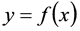
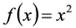
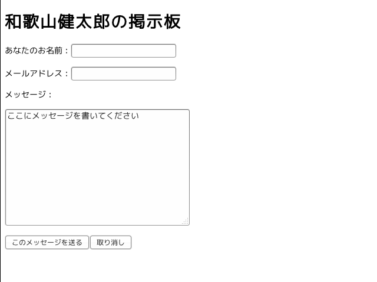
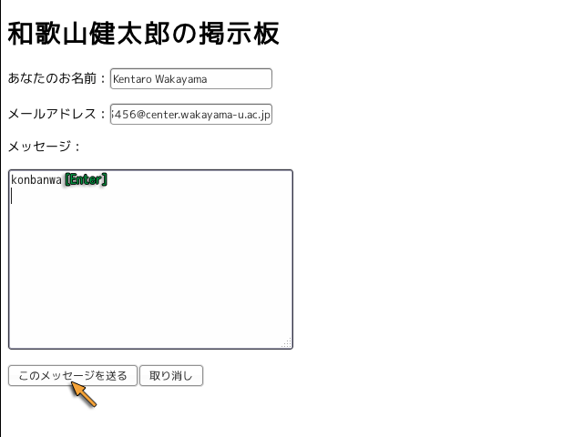
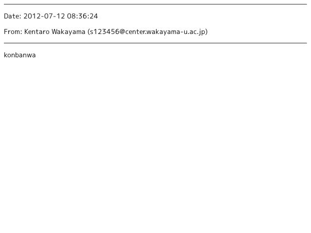

関数とは，例えば次のようなものです．

この関数は，例えば次のように定義します．

Python ではあらかじめ用意された関数を使うだけではなく，自分で関数を定義して使用することができます．端末で python コマンドを実行し，Python の対話モードを起動してください．
| 対話モードで Python を起動する |
|---|
% python[Enter]
Python 2.7.5+ (default, Feb 27 2014, 19:37:08)
[GCC 4.8.1] on linux2
Type "help", "copyright", "credits" or "license" for more information.
>>> |
関数の定義には def 文を使います．
| 関数 f(x) を定義する |
|---|
>>> def f(x):[Enter] |
このようにして，関数の定義を開始します．f は関数の名前です．x はこの関数 f(x) が受け取る引数という変数です．関数を定義する時点では，この引数の値は定まっていないので，これは仮引数と呼びます．仮引数は，コンマで区切って複数使うことができます．この関数で行う処理は，仮引数に何らかの値が入っているものとして記述します．処理内容はこの後に続けて，[Tab] キーなどで字下げを行って記述します．
| 関数 f(x) の処理を記述する |
|---|
>>> def f(x):
... answer = x * x[Enter] |
x * x で x の二乗を求めます．x ** 2 でも同じ結果が得られますが，計算方法が違うので，二乗や三乗程度の定数によるべき乗では ** という演算子はあまり使わないように思います．計算結果をこの関数の値とするには，return 文を使います．この値を戻り値と言います．
| 結果を関数 f(x) の値として返す |
|---|
>>> def f(x): ... answer = x * x ... return answer[Enter] ... [Enter] >>> |
これで関数 f(x) が使えるようになります．f(x) の引数に値を与えます．関数の引数として実際に使用するものは実引数と呼びます．
| 関数 f(x) を使う |
|---|
>>> f(2)[Enter] 4 >>> f(3)[Enter] 9 >>> f(423)[Enter] 178929 |
なお，return 文に直接式を書くこともできます．
def f(x):
return x * x
値を返さない関数を定義することもできます．
| 値を返さない関数 |
|---|
>>> def g(x):[Enter] ... print '*' * x[Enter] ... [Enter] >>> |
これは，このように使うことができます．
| 整数値を '*' の数に変換する関数 |
|---|
>>> g(10)[Enter] ********** >>> g(25)[Enter] ************************* |
しかし，実引数が実数だとエラーになります．
| 実引数が実数だとエラーになる |
|---|
>>>g(3.5)[Enter]
Traceback (most recent call last):
File "<stdin>", line 1, in <module>
File "<stdin>", line 2, in g
TypeError: can't multiply sequence by non-int of type 'float' |
このようなことが起こらないように，引数のデータの型には気を付ける必要があります．
def g(x):
print '*' * int(x)
このように定義すれば，整数のほか実数や数字でも処理を行うことができます．しかし，整数以外の文字列など，整数値に直せないものはやはりエラーになります．
| 実引数を整数に変換してから使用する |
|---|
>>> g(10.5)[Enter] ********** >>> g("10")[Enter] ********** >>> g("10.5")[Enter] Traceback (most recent call last): File "<stdin>", line 1, in <module> File "<stdin>", line 2, in g ValueError: invalid literal for int() with base 10: '10.5' |
定義した関数を組み合わせて使うこともできます．次の関数 f(x) と g(x) がすでに定義されているとします（ここまでの手順が間違っていなければ，そのはずです）．
def f(x):
return x * x
def g(x):
print '*' * int(x)
このとき，たとえば関数 h(x) を次のように定義することができます．
| 関数を合成する |
|---|
>>> def h(x):[Enter] ... g(f(x))[Enter] ... [Enter] |
これは，このように使うことができます．
| 合成した関数を使う |
|---|
>>> for i in xrange(9):[Enter] ... h(i)[Enter] ... [Enter] * **** ********* **************** ************************* ************************************ ************************************************* **************************************************************** |
HTML には Web ページ上でデータの入力を行う Fill-in Form（form タグ）という機能があります．今回はこれを使った Web ページを作成します．まず端末を開いてシェルのカレントディレクトリを public_html の下に移してください．そこでテキストエディタを使って，次の内容のファイル myform.html を作成してください．使用するテキストエディタは emacs でなくても構いません．下の emacs は使用するテキストエディタのコマンドに置き換えてください．
| public_html の下に myform.html を作成する |
|---|
% cd public_html[Enter] % emacs myform.html[Enter] |
myform.html の内容は次の通りです．
<!DOCTYPE html> <html lang="ja"> <head> <meta charset="utf-8"> <title>Kentaro's form</title> </head> <body> <h1>和歌山健太郎の掲示板</h1> <hr> <form> <p>あなたのお名前：<input type="TEXT" name="name" size="20" maxlength="40"></p> <p>メールアドレス：<input type="TEXT" name="address" size="20" maxlength="40"></p> <p>メッセージ：</p> <p><textarea name="message" cols="40" rows="10">ここにメッセージを書いてください</textarea></p> <p><input type="SUBMIT" value="このメッセージを送る"><input type="RESET" value="取り消し"></p> </form> </body> </html>
この myform.html を（ファイルのアイコンをダブルクリックするのではなく） Web サーバー経由で開いてください．Web サーバー経由で開くには，URL に http://com.center.wakayama-u.ac.jp/~ユーザ名/myform.html を指定します．第７回の提出課題のところから自分の Web ページを開いて，その アドレスバーの後ろに myform.html を追加して改行（[Enter]）して開くこともできます．

myhome.html を Web サーバ経由で開いた場合，この各欄にデータ（文字）を入力して "このメッセージを送る" というボタンをクリックすれば，各欄に入力したデータが Web サーバに送られます．アドレスバーの内容を見てみてください．しかし，今の状態ではまだ何も起こりません．
クライアント（Firefox などの Web ブラウザ）から送られてきたデータをサーバ側で利用するには， サーバ側にデータを受け取るプログラムを仕掛ける必要があります． このようなプログラムを CGI (Common Gateway Interface) といいます．そこで，まず始めに，サーバに送られてきたデータを，そのまま出力するプログラムを作成します．テキストエディタを使って，myform.cgi というファイルを作成してください．emacs では次のようにします．
| public_html の下に myform.cgi を作成する |
|---|
% emacs myform.cgi[Enter] |
myform.cgi の内容は Python スクリプトです．ただし，ファイル名の拡張子は ".py" ではなく，".cgi" にします．なお，これは和歌山大学の Web サーバの設定であり，プログラムを CGI として動作させるための設定は，サーバ（プロバイダ）により異なります．
#!/usr/bin/python # -*- coding: utf-8 -*- print 'Content-Type: text/plain; charset=utf-8' # データの形式を出力する print # 空行を出力する import sys print sys.stdin.readlines() # 入力データを1行ごとのリストにして出力する
'Content-Type: text/plain; charset=utf-8' という文字列は， このプログラムから出力されるデータの形式を表します．
MIME TypeWeb サーバ上にファイルとして置いたデータの形式 (MIME Type) は，通常は Web サーバのソフトウェア（あるいはクライアント）がファイル名の拡張子によって判定します．しかし CGI から送り出されるデータでは，ファイル名の拡張子による判定を行うことができません．そこで，代りに送り出すデータの先頭でデータの形式を明示します．
ファイルを保存したら，chmod コマンドを使って作成したスクリプト myform.cgi を実行可能にしてください．
| myform.cgi を実行可能にする |
|---|
% chmod +x myform.cgi[Enter] |
試しに端末で myform.cgi を実行してみてください．カレントディレクトリにあるスクリプトファイルを実行するには，ファイル名の頭に "./" を付ける必要があります．実行するとデータの入力を待ちますから，何かタイプして改行（[Enter] をタイプ）してください．そして最後に Ctrl-D をタイプしてください．これは cat コマンドに似ていますが，Ctrl-D をタイプした後に入力したデータがリストとして出力されます．
| myform.cgi を実行する |
|---|
% ./myform.cgi[Enter] Content-Type: text/plain; charset=utf-8 ←出力するデータの形式 ←空行 This is a pen.[Enter] ←キーボードをタイプする That is a boy.[Enter] Ctrl-D ←Ctrl-D をタイプして入力を終了する ['This is a pen.\n', 'That is a boy.\n'] ←タイプした文字がリストで出力される % ←スクリプトが終了する |
このリストの各要素の最後の '\n' は改行 [Enter] を表します．このように myform.cgi が期待通り動くようなら，次に myform.html を変更します．最初の方にある <form> タグを次のように書き換えて，フォームへの入力内容を myform.cgi の標準入力に与えます．
<form method="POST" action="./myform.cgi">
書き換えたら，Web ブラウザでこのページを再読み込みしてください．その後，何かデータ（今はアルファベットのみ）を入力してください．"メッセージ" のところでは，最後に改行（[Enter] をタイプ）してください．データが入力できたら，"このメッセージを送る" ボタンをクリックしてください．すると Web サーバ側で myform.cgi が実行され，その標準入力に myform.html の各欄に入力したデータが与えられます．

この結果，次の内容のページが現われると思います． これが myform.cgi に与えられたデータです．
['name=Kentaro+Wakayama&address=s123456%40center.wakayama-u.ac.jp&message=konbanwa%0D%0A']
Internal Server ErrorCGI スクリプトでにエラーが発生すると，Internal Server Error という Web ページが表示されます．その場合はスクリプトを端末で実行してエラーメッセージを確認し，スクリプトを修正してください．
これを見ると，データの書式は次のようになっていることが分かります．
<input> タグや <textarea> の NAME= オプションに指定した文字列=欄の文字列 という形式になっている．sys.stdin.readlines() の出力は入力データの一行ごとのリストですから（上の出力は一行分しかありません），この要素を一つずつ取り出すようにします．これには for ～ in による繰り返しを使います．myform.cgi の最後の行を，次のように書き換えてください．
for line in sys.stdin.readlines(): # 入力データを一行ごとに取り出して変数 line に入れる print line # 一行ごとに出力する
この for の次の行の行頭の空白は必ず入れてください．emacs なら [Tab] キーをタイプすれば適当文字数だけ字下げします．また，sys.stdin.readlines() の右には ':'（コロン）を忘れずに置いてください．
変更したらファイルを保存してください．Web ブラウザでデータを入力した入力フォームのページに戻り，もう一度，"このメッセージを送る" ボタンをクリックしてください．リストの [～] や文字列を表す '～' が表示されなくなります．
name=Kentaro+Wakayama&address=s123456%40center.wakayama-u.ac.jp&message=konbanwa%0D%0A
次に，この出力を & で区切ってさらに分解してみましょう．この出力は変数 line に入っています．文字列を特定の文字で区切るには，split というメソッドを使います．myform.cgi の最後の行を，次のように書き換えてください．
print line.split('&') # 一行を & で区切ってリストにして出力する
変更したらファイルを保存してください．Web ブラウザでデータを入力した入力フォームのページに戻り，もう一度，"このメッセージを送る" ボタンをクリックしてください．今度は行を & で分割したリストになっています．
['name=Kentaro+Wakayama', 'address=s123456%40center.wakayama-u.ac.jp', 'message=konbanwa%0D%0A']
したがって，今度はこのリストの要素を一つずつ取り出します．これにも for ～ in による繰り返しを使います．myform.cgi の最後の行を，次のように書き換えてください．このとき，line.split('&') の右に ':'（コロン）を忘れずに置いてください．
for line in sys.stdin.readlines(): # 入力データを一行ごとに取り出して変数 line に入れる for data in line.split('&'): # 一行を & で区切って一つずつ出力する print data # 一つのデータを出力する
変更したらファイルを保存してください．Web ブラウザでデータを入力した入力フォームのページに戻り，もう一度，"このメッセージを送る" ボタンをクリックしてください．リストの要素の文字列が取り出されるので，リストに付いていた [～] や文字列を表す '～' が表示されなくなります．
name=Kentaro+Wakayama address=s123456%40center.wakayama-u.ac.jp message=konbanwa%0D%0A
このデータから名前やメールアドレスなど必要な部分を取り出します．その前に，'+' は空白（' '）に置き換えます．また一部の記号や日本語の文字などは前述のように '%16進数' という表記になっていますから， これを元の文字に直す必要があります．この方法を考えてみます．端末で python コマンドを実行し，Python の対話モードを起動してください．
| 対話モードで Python を起動する |
|---|
% python[Enter]
Python 2.7.5+ (default, Feb 27 2014, 19:37:08)
[GCC 4.8.1] on linux2
Type "help", "copyright", "credits" or "license" for more information.
>>> |
変数 x に何か適当な文字列を代入します．次の内容を端末で動いている Python にコピー＆ペーストしても構いません．
| フォームのデータを変数 x に代入する |
|---|
>>> x = 'abcdefgh'[Enter] |
この先頭の1文字を取り出します．これはスライス（[～]）を使います．文字列の先頭の文字は０番目です．これを変数 c に代入します．
| x の先頭の文字を変数 c に取り出す |
|---|
>>> c = x[0][Enter] |
c には x の先頭の文字 'a' が入っているはずです．
| 変数 c の内容 |
|---|
>>> c[Enter]
'a' |
c に x の先頭の文字を取り出したので，x からはその文字を取り除きます．x の先頭を除いた残りの文字は x[1:] で取り出すことができます．
| 変数 x の先頭を除いた残りの文字 |
|---|
>>> x[1:][Enter]
'bcdefgh' |
これを x に代入すれば，x から先頭の文字を取り除くことができます．
| x から先頭の文字を取り除く |
|---|
>>> x = x[1:][Enter] |
変数 x の内容を確認してみてください．
| 変数 x の内容 |
|---|
>>> x[Enter]
'bcdefgh' |
このように x の先頭の1文字を取り出し，x に残りの文字を入れる処理を繰り返せば，x に含まれる文字を1文字ずつ取り出すことができます．また，この処理の結果，最終的に x は空文字列（''）になってしまいます．空文字列は条件判断の際に False（偽）として扱われますから，x が空文字列になるまで繰り返すには，while 文による繰り返し処理を使います．
以下の内容は端末に打ち込んだりファイルを作成する必要はありませんが，下線部を Python の対話モードにコピー＆ペーストすれば実行できると思います．
while x: # x が空文字列でない間 c = x[0] # x の先頭の文字を取り出して c に入れる x = x[1:] # x の残りの文字を x に入れる
したがって，この c が '+' なら，c を ' '（スペース）に置き換えます．これは if 文による条件判断を使います．比較の == と代入の = を間違えないようにしててください．
while x:
c = x[0]
x = x[1:]
if c == '+': # もし c が '+' なら
c = ' ' # c を ' '（空白）に置き換える
もし，c が '+' でなければ，こんどは c と '%' を比較します．この比較は，先の if の条件が成立しなかったときのみ行いたいので，elif を使います．
while x:
c = x[0]
x = x[1:]
if c == '+':
c = ' '
elif c == '%': # ではなく，もし c が '%' なら
c が '%' だったときは，この文字自体は使わず，これに続く2文字を x[:2] によって取り出します．これは16進数で表された文字コードです．したがって，その2文字を16進数の文字列から整数に変換します．実数値や文字列を整数に変換するには int() 関数を使います．int() 関数の第２引数の 16 は，文字列が表す整数の基数です．16 なら文字列を16進数とみなして整数に変換します．
while x:
c = x[0]
x = x[1:]
if c == '+':
c = ' '
elif c == '%':
code = int(x[:2], 16) # '% に続く2文字 x[:2] を16進数を表す文字列として整数に変換
さらにその整数で表された文字コードに対応する文字を求めます．また，整数値である文字コードから対応する文字を得るには chr() 関数を使います．そして，得られた文字を c に代入します．
while x:
c = x[0]
x = x[1:]
if c == '+':
c = ' '
elif c == '%':
code = int(x[:2], 16)
c = chr(code) # 文字コードが code である文字を得て c を置き換えるこの最後の2行は1行にまとめることができます．この場合，変数 code は不要になります．
while x:
c = x[0]
x = x[1:]
if c == '+':
c = ' '
elif c == '%':
c = chr(int(x[:2], 16))
こうして得られた文字 c を出力します．ところが，c は元の文字列 x を1文字ずつばらばらにしたものですから，これをつなぎ合わせて再度一つの文字列にする必要があります．そこで，これを一旦リストに保存します．試しに端末で動いている Python の対話モードで，以下の内容を実行してみてください．
最初に空のリストを代入した変数 s を用意します．
| s に空のリスト [] を代入する |
|---|
>>> s = [][Enter] |
s に要素を追加するには，append() というメソッドを用います．
| s に要素を追加する |
|---|
>>> s.append('a')[Enter] >>> s[Enter] ['a'] |
s にさらに要素を追加します．
| s にさらに要素を追加する |
|---|
>>> s.append('b')[Enter] >>> s.append('c')[Enter] >>> s[Enter] ['a', 'b', 'c'] |
このように append() メソッドによて s の末尾に要素が追加されていきます．このリスト s の要素をつないで一つの文字列にするには，文字列の join() というメソッドを使います．例えば，リスト s の要素を '===' でつないで一つの文字列にするには，join() メソッドを使って次のようにします．
| s の要素を '===' でつないだ文字列を作る |
|---|
>>> '==='.join(s)[Enter]
'a===b===c' |
もし，要素と要素の間に何も入れたくないなら，''（空文字列）に対して join() メソッドを適用します．
| s の要素を '===' でつないだ文字列を作る |
|---|
>>> ''.join(s)[Enter]
'abc' |
以上をもとに，フォームから送られてくる文字列を変換するしょりを関数にまとめると，次のようになります（実は Python の cgi モジュールには，このような機能がすでに用意されています）．この関数名は decode(x) とします．この x は仮引数と呼ばれる変数で，この関数を使うときに実際に値を設定します．したがって，ここではこの x を文字列だと思って，1文字ずつ文字を置き換えていきます．次の内容を，myform.cgi の二つ目の print（空行を出力しているもの）の後に追加してください．
def decode(x): # 関数 decode() の定義 s = [] # s を空のリストにしておく while x: # x が空の文字列でない間 c = x[0] # 先頭の 1 文字を c に取り出す x = x[1:] # x の残りの文字列を x に入れる if c == '+': # もし c が '+'（プラス）なら c = ' ' # ' '（スペース）に置き換える elif c == '%': # そうではなく，c が '%' だったら c = chr(int(x[:2], 16)) # 続く 2 文字を 16 進数として整数 (int) に変換して更に文字 (chr) に変換 x = x[2:] # x の最初の 2 文字を取り除いた残りの文字列を x に入れる s.append(c) # 結果として得られた c をリスト s に追加する return ''.join(s) # リストを結合して文字列に直して返す
関数 decode() を myform.cgi に追加したら，myform.cgi の最後の行を次のように書き換えてください．変数 line を関数 decode() で変換してから出力するようにします．
print decode(data) # 一つのデータを文字を置き換えてから出力する
ファイルを変更したら保存してください．そして Web ブラウザでデータを入力した入力フォームのページに戻り，また "このメッセージを送る" ボタンをクリックしてください．ちゃんと文字が置き換えられているでしょうか．
name=Kentaro Wakayama address=s123456@center.wakayama-u.ac.jp message=konbanwa
それでは，この各行について，name= で始まっていれば変数 name に， address= で始まっていれば変数 address に， message= で始まっていれば変数 message に格納するよう myform.cgi の最後の行を変更します．
s = decode(data) # 一つのデータの文字を置き換えて print する代わりに s に入れる if s[:5] == 'name=': # 先頭から 5 文字目までが name= だったら name = s[5:] # 6 文字目以降を変数 name に格納する elif s[:8] == 'address=': # そうではなく先頭から 8 文字目までが address= だったら address = s[8:] # 9 文字目以降を変数 addr に格納する elif s[:8] == 'message=': # そうではなく先頭から 8 文字目までが message= だったら message = s[8:] # 9 文字目以降を変数 mesg に格納する print name, address, message # 変数に格納したデータを出力する
Web ブラウザでデータを入力した入力フォームのページに戻り，"このメッセージを送る" ボタンをクリックしてください．次のような表示が得られるでしょうか．"メッセージが日本語でも表示できるかもしれません（できないかもしれません）．
Kentaro Wakayama s123456@center.wakayama-u.ac.jp konbanwa
それでは，これらの変数に格納されているデータを使って，HTML を出力するようにします．ここでは次のようにレイアウトしてみましょう．
Date: 2012-07-12 13:30:46
From: Kentaro Wakayama <s123456@center.wakayama-u.ac.jp>
konbanwa
このようなレイアウトで表示するには，myform.cgi の出力が下のようにする必要があります．'<' や '>' は，HTML のタグと区別するために，それぞれ <，> に置き換えます．
<hr> <p>Date: 2012-07-12 13:30:46</p> <p>From: Kentaro Wakayama <s123456@center.wakayama-u.ac.jp></p> <hr> <p> konbanwa </p>
そこで，myform.cgi の最後の行 (print name, address, message) を次のように変更します．datetime モジュールは日付や時刻を扱います．
import datetime # 日付データを取得するモジュールを導入する date = datetime.datetime.today().strftime("%Y-%m-%d %H:%M:%S") print '<hr>' print '<p>Date: ' print date print '</p>' print '<p>From: ' print name print ' <' + address + '>' print '</p>' print '<hr>' print '<p>' print message print '</p>'
Web ブラウザでデータを入力した入力フォームのページに戻り，"このメッセージを送る" ボタンをクリックしてください．次のような表示が得られるでしょうか．print 文は改行を出力するため，この出力は目的の出力に対して改行が余分に入っていますが，HTML では複数の空白や改行は一つの空白に置き換えられるので気にしないことにします．
<hr> <p>Date: 2012-07-12 08:43:46 </p> <p>From: Kentaro Wakayama <s123456@center.wakayama-u.ac.jp> </p> <hr> <p> konbanwa </p>
しかし，この出力の Content-Type: は text/plain なので，このままでは HTML のソースが表示されてしまいます．これがちゃんとレイアウトされて表示されるようにするには，mycount.cgi の先頭で出力している Content-Type: を text/html に変更します．なお，この HTML のソースは，HTML としては不完全なものですが，Web ブラウザががんばって表示してくれると思います．
#!/usr/bin/python # -*- coding: utf-8 -*- print 'Content-Type: text/html; charset=utf-8' # データの形式を出力する print # 空行を出力する
Web ブラウザでデータを入力した入力フォームのページに戻り，"このメッセージを送る" ボタンをクリックしてください．次のような表示が得られるでしょうか．

このデータをもとのページに埋め込みます．そのために，myform.cgi の出力をそのままクライアントに返すのではなく，一旦ファイルに保存して，SSI (Server Side Include) を使ってそれを myform.html のページに含めるようにします．myform.html で SSI が使えるようにするために，このファイル名を myform.shtml に変更してください．
| myform.html を myform.shtml に変更する |
|---|
% mv myform.html myform.shtml[Enter] |
次に，myform.shtml のフォーム部分の前（<form method="POST" action="./myform.cgi"> の前）に次の1行目（<!--#include file="mydata"--> と <hr>）を入れてください．なお，ファイル mydata がない状態では，この部分にエラーメッセージが表示されますが，今は無視してください．．
<!--#include file="mydata"--><hr>
<form method="POST" action="./myform.cgi">
また，myform.cgi では，実行したときに出力をクライアントに表示する代りに，myform.shtml が表示されるようにします．このために，myform.cgi の先頭部分でで Content-Type: を出力するかわりに，ページの移動を指示する Location: を出力します．
#!/usr/bin/python # -*- coding: utf-8 -*- print 'Location: myform.shtml' # ページを移動する print # 空行を出力する
最後に，HTML を出力していた部分を，mydata というファイルに書き込むようにします．そのために mydata というファイルを開いて (open)，print する代わりにそのファイルに書き込みます (write)．open() 関数の二つ目の引数 'a' は，既にあるファイルの後ろにデータを追加します (append)．また，最後にファイルを閉じます (close)．なお，以下は全部文字列の出力ですから，出力するものを '+' でつないで write() を一個で済ませることもできます（むしろそうしてください）．
import datetime # 日付データを取得するモジュールを導入する date = datetime.datetime.today().strftime("%Y-%m-%d %H:%M:%S") f = open('mydata', 'a') f.write('<hr>') f.write('<p>Date: ') f.write(date) f.write('</p>') f.write('<p>From: ') f.write(name) f.write(' <' + address + '>') f.write('</p>') f.write('<hr>') f.write('<p>') f.write(message) f.write('</p>') f.close()
以上の作業が完了したら，http://www.wakayama-u.ac.jp/~tokoi/lecture/shori1/shori1-14/ にある自分のユーザ名をクリックして，実際に何か書き込んでテストしてみてください．
注意
- CGI は Web サーバの機能です．Web サーバを経由せずに HTML ファイルを開いても動作しません．HTML ファイルをダブルクリックして開いても動作しません．
- いつまでたっても終了しない（無限ループの）プログラムを CGI で使ってしまうと，Web サーバの負荷を非常に高めてしまいます．上記の Web ページ手テストする前に，作成したプログラムをコマンドとして実行するなどして，手元で動作テストをしてください．
- このプログラムには数多くの問題があります ．まず，排他制御を行っていないので， 複数の人が同時に書き込むとデータが壊れます．また，データをファイルの後ろに追加しているので，データが登録順に並んでしまって最新のものが下の方に行ってしまうなど，使い勝手もよくありません．何より，このスクリプトはセキュリティ対策を全く行っていないので，実際に使うのは非常に危険です．そのあたりは将来の課題として，暇がある人は考えてみてください．
次の (1), (2) の作業を行ってください．完了したら tokoi@sys.wakayama-u.ac.jp にメールで知らせてください．その際，メールの本文に (3) の内容を追加してください．メールの件名 (Subject) は shori1-14 にしてください．期限は次週の水曜日中までです．
<br> などを出力する必要があります．そこで (1) と同様に，改行を表す '\n' という文字を <br> に置き換えるよう，関数 decode() を変更してください．ただし，これは (1) とは別のところで判定する必要があります．